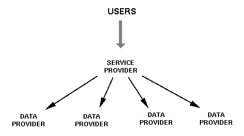

About this document.
This document was prepared in conjunction with the
workshop on
Web-Based Language Documentation and Description,
held in Philadelphia on 12-15 December 2000, and subsequently
revised with input from workshop participants. At the
end of the workshop, the participants agreed to form
the Open Language Archives Community proposed in this document.
This white paper is the culmination of a series of four documents. The vision statement analyzes the gap between what users need and the ideal situation we are aiming for. The requirements document describes the ideal situation in considerable detail, while the survey gives an overview of the situation we find outselves in today.
This document is a proposal for an Open Language Archives Community,
laying out the technical components and showing how they support the
"Seven Pillars of Open Language Archiving" described in the
vision statement. We begin by describing the
Open Archives Initiative, and then show how it provides a suitable
technical infrastructure for the community we wish to create.
1. The Open Archives Initiative
The Open Archives initiative (OAI) was launched in October 1999 to provide a common framework across electronic preprint archives [http://www.openarchives.org/]. The first and largest such archive is the Los Alamos National Laboratory Physics Archive, founded in 1991, which houses over 100,000 papers and serves 50,000 users daily [http://arXiv.org/]. As other disciplines and institutions have begun to create their own public research archives, it has become apparent that conventions are needed so that archives can cooperate, and so that any holding in any of these archives can be found from anyone's desktop worldwide, as if everything was held in a single virtual public library.
At its last meeting in September 2000, the OAI vision was broadened to include digital repositories of scholarly materials regardless of their type. As stated, their new mission is: "to supply and promote an application independent technical framework - a supportive infrastructure that empowers different scholarly communities to pursue their own interests in interoperability in the technical, legal, business, and organizational contexts that are appropriate to them" [http://www.openarchives.org/oai-tech-cornell/cornell_report.pdf]. The rest of this section prsents the key concepts which comprise the OAI framework.
In the OAI infrastructure, each participating archive implements a repository, a network accessible server offering public access to archive holdings. The primary object in an OAI-conformant repository is called an item, having a unique identifier and being associated with one or more metadata records. Each metadata record describes an archive holding, which is any kind of primary resource such as a document, data, software, a recording, a physical artifact, a digital surrogate, and so forth. Each metadata record will usually contain a reference to an entry point for the holding, such as a URL or a physical location, as shown in Figure 1. (Note that in OAI parlance, both the metadata repository and the primary archive are often referred to as archives.)
|
|
| Figure 1: The Relationship Between an OAI Repository and an Archive |
To implement the OAI infrastructure, a participating archive must comply with two standards: the OAI shared metadata set, and the OAI metadata harvesting protocol.
The OAI specifies the Dublin Core as the shared metadata set. Every item in an OAI-conformant repository must be able to describe itself in terms of the Dublin Core. The purpose of this requirement is to facilitate interoperability across all communities participating in the OAI. The Dublin Core Metadata Initiative began in 1995 to develop conventions for resource discovery on the web [http://purl.org/DC/]. The Dublin Core metadata elements represent a broad, interdisciplinary consensus about the core set of elements that are likely to be widely useful to support resource discovery. The Dublin Core consists of 15 metadata elements, where each element is optional and repeatable: Title, Creator, Subject, Description, Publisher, Contributor, Date, Type, Format, Identifier, Source, Language, Relation, Coverage, Rights. This metadata set can be used to describe resources that exist in digital or traditional formats.
The OAI Metadata Harvesting Protocol allows software services to query a repository using HTTP requests. The protocol supports the following six service requests:
OAI archives are called "data providers," though they are strictly just metadata providers. Typically, data providers will also have a submission procedure, together with a long-term storage system, and a mechanism permitting users to obtain materials from the archive. An OAI "service provider" is a third party that provides end-user services (such as search functions over union catalogs) based on metadata harvested from one or more OAI data providers. A service provider uses the metadata harvesting protocol to collect metadata from participating archives and build a database which forms the basis of their service. Figure 2 illustrates a single service provider accessing three data providers. End-users only interact with service providers.
|  |
| Figure 2: A Service Provider Accessing Multiple Data Providers |
The item identifiers of a data provider are unique for that provider. To avoid collisions and to permit identifiers to be resolved across the whole OAI community, each data provider is assigned a unique identifier. The syntax for fully qualified identifiers is: oai : <archive-identifier> : <record-identifier>.
The OAI Community is defined by the archives which comply with the OAI Metadata Harvesting Protocol and that register with the OAI. Any compliant repository can register as an Open Archive. The metadata provided by an Open Archive is open to the public. A consequence of this definition of community is that there is no special notion of "OAI membership" other than participation in the infrastructure, either as a data provider, a service provider, or a user. A diagram of the OAI community is shown in Figure 3.
| Figure 3: The Open Archives Community |
OAI data providers may support metadata standards in addition to Dublin Core, and the ListMetadataFormats request will report all metadata formats supported by a repository. A specialist community can define a metadata format which is specific to its domain. Service providers, data providers and users that employ this specialized metadata format constitute an OAI subcommunity. For OAI compliance, the subcommunity's data providers must support Dublin Core (in addition to any other metadata formats). The syntax or semantics of these other formats is outside the scope of the OAI.
Our vision statement describes a user community that creates and uses language documentation which is cut off from the DATA, TOOLS and ADVICE that it needs in order to function effectively. It goes on to propose the formation of a more formal Open Language Archives Community (OLAC) to address the situation. Community-agreed specialized METADATA, supported by data providers and service providers that are accessible from a single GATEWAY, will bridge the gap. The harvesting protocol is the central STANDARD which brings all these pieces together. Thus, the OAI provides a large piece of the infrastructure needed for our community.
The first port of call for end users will be the OLAC GATEWAY. This will provide a centralized registry of OLAC data providers and service providers. (Technical details about the functioning of this registry are given in a recent proposal to the OAI [community-providers.html].) Open Language Archives will register with the OLAC Gateway, and it will validate their metadata for conformance with the OLAC metadata schema as a service to the community.
Figure 4 shows the envisioned Open Language Archives Community. Users will navigate via the gateway to the service provider of their choice, and then search a catalog of archive holdings.
| Figure 4: The Envisioned Open Language Archives Community |
The double headed arrow on the right represents the fact that each data provider must register with the gateway (the upwards direction) and that the gateway will validate the metadata served by each data provider (the downwards direction). From the service provider level there is an arrow going up to the gateway, since service providers will need to query the OLAC registry to find out what data providers exist. The arrow going down from service providers to data providers corresponds to the metadata harvesting protocol. Service providers will collect and index the metadata records provided by each data provider.
In time, the number of data providers and service providers would grow. Some would be quite general in coverage, while others would be restricted or specialized in some way. For example, a particular data provider might only house materials for Bantu languages. A particular service provider may build extended indexing and processing services just for lexical data and tools. In this manner, the Open Language Archive Community will provide interoperability without limiting diversity.
The thing that makes the Open Language Archives Community a distinct subcommunity within the set of all archives participating in the Open Archives Initiative is its metadata set. It is by means of this metadata set that our community expresses the information about archive holdings that are fundamental to the enterprise of language documentation. This section of the white paper defines what those fundamental information elements are. But before doing that, we first discuss basic design decisions that constrain the form that the OLAC metadata set ultimately takes.
In developing the OLAC metadata set we have been guided by the following three design decisions:
We need a low overhead metadata set.
By low overhead we mean that the complexity and size of the metadata scheme is kept to a minimum. We need this for two reasons. First, the cost of encoding the metadata for an archive wanting to join the community must not be so high as to pose an obstacle. Second, the range of kinds of holdings in language archives is vast, including materials like hand-written field notes, descriptive articles and monographs, sound and video recordings, and annotated corpora. The OLAC metadata set may not privilege any one of these holding types, but must be the common denominator that is relevant to all types.
We should build on the Dublin Core metadata set.
The Dublin Core metadata set already caters to the common needs of a broad spectrum of holding types. It is also a standard that every OLAC archive will already need to support since it is the metadata set of the OAI. Thus it is expedient to build our OLAC metadata set on top of it. That is, every element of the Dublin Core metadata set is also an element of the OLAC metadata set so that all the work a participating archive does to describe its holdings in terms of Dublin Core will transfer to the OLAC metadata set without change.
We should build on Dublin Core by using the qualification mechanism recognized by the Dublin Core Metadata Initiative.
For the specialized metadata of our community, how should we extend the base Dublin Core metadata set? The Dublin Core Metadata Initiative already has an answer for this. In "Dublin Core Qualifiers" [http://purl.org/dc/documents/rec/dcmes-qualifiers-20000711.htm], the DCMI recommends principles governing the qualification of base elements to make them more specific. In defining the metadata elements unique to OLAC, we will follow these guidelines for qualifying existing DC elements rather than developing altogether new elements.
Given that the OLAC metadata set should extend the Dublin Core set only to the minimum degree needed to express what is fundamental about open language archiving, we are now confronted with determining what that minimal set of extensions is. The requirements document provides the answer. It turns out that the metadata elements we must add are exactly those needed to meet the requirements of the user community. User requirements 4 through 8 describe specific needs that can only be met through special-purpose metadata elements. These involve:
In "Dublin Core Qualifiers" [http://purl.org/dc/documents/rec/dcmes-qualifiers-20000711.htm], two kinds of qualifications are allowed: encoding schemes and refinements. An encoding scheme specifies a particular controlled vocabulary or notation for expressing the value of an element. The encoding scheme serves to aid a client system in interpreting the exact meaning of the element content. A refinement makes the meaning of the element narrower (or more specific). A refined element shares the meaning of the unqualified, but with a more restricted scope.
Two OLAC metadata requirements can be met just by qualifying two existing elements with an encoding scheme. The Language element can be encoded using the conventions of RFC 1766 to unambiguously identify the language is written (or spoken). To handle the full range of the world's languages, SIL language codes are used as described in "Language Identification in Metadata Descriptions of Language Archive Holdings" (Simons 2000). The Format element can be encoded using the Internet Media Type (also known as MIME type) as a means of unambiguously identifying the format of a digital resource. Thus,
| Dublin Core element | Encoding scheme | Description |
|---|---|---|
| Language | RFC1766 | Identifies the language in which an item is written or spoken, using a code of the form x-sil-aaa. |
| Format | IMT | Identifies the Internet Media Type (e.g. MIME type) of a digital resource. |
The remaining OLAC metadata requirements are met by refining existing Dublin Core elements. These include identifying the language being documented or described, summarizing the openness of an item both in terms of its rights of use and its format, specifying more detail about the character encoding and markup of digital text resources, identifying the broad category of data made available in the item, and identifying other resources that are needed to use the item.
| Dublin Core element | Refinement | Description |
|---|---|---|
| Subject | language | Identifies the language an item documents with a code of the form x-sil-aaa. |
| Rights | openness | Summarizes how open the rights of use are by selecting one of: open, published, restricted, or unknown. |
| Format | openness | Summarizes how open the format of the item is by selecting one of: open, proprietary, mediated, non-digital, or unknown. |
| Format | encoding | Identifies the character encoding scheme used for a text Internet Media Type. |
| Format | markup | Identifies the markup scheme used for a text Internet Media Type. |
| Type | data | Identifies the broad category of data which the content represents, as one of: wordlist, lexicon, signal, annotated signal, writing system, text, interlinear text, paradigm, field notes and description. |
| Relation | requires | Gives the URI of another resource that is needed to be able to use the item. |
This treatment of the OLAC metadata set has merely presented an overview. The detailed definition of the metadata set will be provided in a later document, "OLAC Metadata Set: Reference Description".
Having obtained material from an OLAC archive, an end-user may want to find software which understands the format, or a tool to convert data from the format into a more convenient format. There already exist many software tools, data models and formats, fonts, and best practice recommendations, and the quantity of these resources continues to grow rapidly. As with the primary language materials, we need finding aids for the computational resources. To meet this need, we extend the OLAC metadata set to cover computational resources.
In three cases, we simply reuse the same metadata elements required for OLAC data, but broaden the interpretation to include tools. These elements are repeated below with revised definitions.
| Dublin Core element | Refinement | Description |
|---|---|---|
| Subject | language | Identifies the language an item documents or that the tool supports with a code of the form x-sil-aaa. |
| Type | data | Identifies the broad category of data which the content represents or the tool operates on, as one of: wordlist, lexicon, signal, annotated signal, writing system, text, interlinear text, paradigm, field notes and description. |
| Relation | requires | Gives the URI of another resource that is needed to be able to use the item, e.g. a dictionary, software documentation, function libraries. |
In addition to these, there are six new refinements to the Dublin Core elements, listed below.
| Dublin Core element | Refinement | Description |
|---|---|---|
| Rights | software | Summarizes how open the rights of use are by selecting one of: open source, royalty-free library, royalty-free binary (freeware), shareware, limited-functionality, limited-time, commercial, or unknown. (This enumeration represents a second scheme for this element.) |
| Format | sourcecode | Identifies the programming language(s) of software distributed in source form, as one of: C++, Prolog, Pascal, Java, Perl, Python, Tcl, VB, and so on. |
| Type | functionality | Identifies the broad functionality of the software, as one of: store, create, convert, display, query. |
| Type | os | Identifies the operating system(s) for which the software is available, using the following inventory: AIX, BSDi, DECAlpha, DOS, HPBLS, HPUX, IRIX, Linux, MacOS, OS/2, SCO CMW, SCO ODT, Solaris, SunOS, UnixWare, Win95, Win98, Win2k, WinNT |
| Type | osversion | Identifies the operating system version(s) for which the software is available. |
| Type | cpu | Identifies the CPU(s) for which the software is available (in the case of binary distributions), using the following inventory: x86, mips, alpha, ppc, sparc, 680x0 |
So far we have considered data and tools. Material from the third category, advice, will pertain to data, or tools, or both. Therefore it will employ some mixture of the data and tools metadata.
This treatment of the OLAC metadata set has merely presented an overview. The detailed definition of the metadata set will be provided in a later document, "OLAC Metadata Set: Reference Description".
Another of the user requirements speaks to metadata and the need for it to be uniform so as to support focussed searching:
Uniform metadata descriptions can be used to perform focussed searching of language resources by metadata categories regardless of where on the Web they may actually be archived.
The metadata refinements listed above, all of which were motivated by more specific requirements, also serve to address this requirement. But there are potentially other refinements that would be justified solely on the basis of supporting the kinds of searches that the OLAC user community will want to make.
In general, the value of an unqualified Dublin Core metadata element can be interpreted by humans and thus may profitably be used in keyword searches. However, to take advantage of metadata for more focussed searching, it may be necessary to refine elements that are too broad or to provide encoding schemes that enable a computer to interpret the values. In envisioning the kind of search facility we want for the combined catalog of all OLAC holdings, the community must decide which metadata elements it would like to further qualify. For instance, these are possible qualifications:
| Dublin Core element | Possible qualification |
|---|---|
| Date | We could specify a particular encoding scheme that would always be used with Date in OLAC metadata. |
| Identifier | We could specify that Identifier is always encoded as a URI. |
| Relation | We could support additional refinements of Relation like isPartOf and hasPart to encode the relationship between a corpus and component resources within it, or isReplacedBy and replaces to encode the succession of versions. |
| Subject | In addition to language, we could add refinements like country, topic, and classification (e.g. language family or subgroup) and maintain separate controlled vocabularies for these. |
| Format | We could provide encoding schemes for operating systems, CPUs, and software licence categories, using existing inventories where possible (e.g. the Open Software Description Format provides a (dated) inventory of operating systems and CPUs [http://www.w3.org/TR/NOTE-OSD.html]). |
Many of the metadata elements use controlled vocabularies. Elements like Format.openness and Rights.openness use such small vocabularies that all the possible values are enumerated in an XML DTD for the metadata set so that the values can be validated when the metadata record is validated.
For other metadata elements that use a controlled vocabulary, the list of possible values may be very large (as with Subject.language) or it involves an open-ended list (as with Format.markup). In such cases, enumerating the possible values in the DTD will not work. To handle controlled vocabularies of this kind, the design of the Open Language Archives Community includes "controlled vocabulary servers."
A controlled vocabulary server is a network-accessible service that maintains and documents a controlled vocabulary on behalf of the community. Through a URL published on the OLAC web site it offers participating archives access to the controlled vocabulary, such as through complete value lists that can be downloaded or through an interactive interface that helps a user find an appropriate value. For instance, SIL International has agreed to act as controlled vocabulary server for language identifiers (see Simons 2000 for a description of how this service will be rendered).
The OLAC metadata set is not the final word on metadata in the language archives community. In the same way that OLAC represents a specialized subcommunity with respect to the entire Open Archives community, there are specialized subcommunities within the scope of the OLAC community. For instance, the ISLE Meta Data Initiative is developing a detailed metadata scheme for corpora of recorded speech events and their associated descriptions [http://www.mpi.nl/world/ISLE/documents/draft/ISLE_Metadata_2.0.pdf]. For archived language resources that of this kind, such a metadata scheme would give much richer description.
The fact that the Open Archives Initiative framework provides a means for archives to support multiple metadata standards means that it is already possible for any OLAC archive to support multiple metadata standards, and to participate in one or more other subcommunities. Using the OAI's metadata harvesting protocol, such a subcommunity can implement its own service provider that offers focussed searching based on its rich metadata set.
OLAC would support such subcommunities in two ways. First, through URLs published on the OLAC web site, the availability and specialized services of these subcommunities would be made known to the whole OLAC community. Second, in the combined catalog of all OLAC holdings, the primary OLAC service provider will keep track of what richer metadata formats are available for each resource. This will allow it to augment the display of any resources having richer metadata with a link to a site in the specialized subcommunity that would give a display (and search access) based on the richer metadata.
The previous section discussed the proposed OLAC Metadata Set. This is to be a standard which governs the structure and interpretation of the community-specific metadata that the OLAC gateway and OLAC service providers can obtain from OLAC data providers. The means by which this metadata is obtained is covered by a separate standard, the OAI Metadata Harvesting Protocol. Together, these standards completely specify the interaction which takes place in Figure 4, where two descending arrows meet the data providers.
The two ascending arrows going to the OLAC gateway correspond to yet another standard, the community provider protocol, which defines how data providers and service providers update and query the OLAC registry.
OAI conformance requirements, most notably the Dublin Core Metadata Set, constitute another source of OLAC standards.
One more standard is needed to complete the infrastructure. This is a standard that governs the review practice. The most important contribution of this standard would be to define the process by which a particular instance of advice becomes adopted by the community as its expression of recommended best practice. We have a number of models for this (for instance, the processes followed by the Worldwide Web Consortium, the Dublin Core Metadata Initiative, and the Internet Engineering Task Force).
The Open Language Archives Community (OLAC) is the community of language archives and associated services which implement the OLAC standards.
Note that at present the OLAC standards consist of the OAI harvesting protocol, the OLAC metadata set, and the community gateway protocol. We anticipate that a standard defining the review process will be added in time.
The purpose of OLAC is to support the community of people that we have labelled the language documentation community, by fostering the sharing of language resources.
Each OLAC archive will be asked to select a representative to serve on an advisory council to help guide OLAC in the future. As new issues arise concerning metadata sets and protocols, council members will have a say in how the issues are addressed.
The OLAC gateway will be http://www.language-archives.org. This site will host the documents which define the OLAC standards including the schema for the OLAC Metadata Set. The site will also host the registry of data providers, an index of the service providers, a list of controlled vocabulary servers, an archive of reviews, and a collection of best practice recommendations.
As the foremost electronic network of linguists with over 13,000 members worldwide, LinguistList [http://www.linguistlist.org] will be the primary OLAC service provider, providing a union catalog for the whole Open Language Archives Community. LinguistList could also serve a key role in the review process by hosting a mailing list and archive for OLAC reviews.
It is usually difficult to judge the scale, quality and openness of a digital resource and of the human and institutional support behind it. Information about available resources may be misleading, out-of-date, or erroneous, and access to resources may be delayed or blocked by unadvertized restrictions. Problems may be discovered with tools, formats and recommended best practices. Members of any professional community eventually learn where to go for a given service, although this knowledge is usually undocumented. Given the distributed nature of the language documentation community, we believe that it would be helpful to institute an informal, open, peer review process, which we sketch below.
Anyone who uses an OLAC service provider or data provider would be encouraged to report their experience by completing a form available at the OLAC Gateway. The review would be forwarded to the contact person for the provider, who could post a response. Visitors to the OLAC Gateway would be able to peruse these reviews and responses.
In the framework we are proposing here, the review standard defines the process whereby advice can be promoted to the status of community-wide best practice recommendation.
OLAC Gateway will maintain a collection of Requests For Comment (RFCs) and recommended best practices. RFCs may report an existing practice and experience with that practice, then present a case for wider adoption of the practice. RFCs may be accompanied with other materials, such as an XML DTD. RFCs will typically be categorized by OLAC Metadata.
Anyone would be able to submit an RFC, and it would be dated and stored. Anyone could comment on a submitted RFC using the review process described above. The OLAC Gateway would support a votebot, and anyone would be free to vote on the RFC (accept, resubmit, reject). Within six months of submission the RFC, reviews and votes would be considered by the OLAC advisory council, with the result: accept, resubmit, reject.
If a best practice is accepted, it is cited as recommended best practice on the OLAC Gateway. If the best practice is a data format, there will usually be a corresponding XML DTD or Schema.
There could be multiple best practices concerning a given domain. For example, several lexicon DTDs may end up being designated as recommended best practice, and they may embody fundamentally distinct approaches to the domain. In this way, we hope that the recommendations answer a community member's question: "what are some good ways of working with materials of such and such a type?" In this way, we hope to eliminate some of the needless diversity which arises when the same wheel is invented several times over by different groups who are unaware of each other's existence, and which throws up a significant obstacle for the reuse of data and tools. At the same time, this process will not restrict the necessary diversity which is a central part of scientific innovation in the language documentation community.
Note that, over time, best practice recommendations may be replaced by subsequent recommendations.
This White Paper has the status of a draft. It will be revised based on feedback received during the workshop, and then released at the end. Individuals and working groups are requested to give comments to the authors. Detailed comments would preferably be given in writing.
Looking ahead, there are two ways in which the community can start building OLAC right away.
The OLAC metadata sets and the community provider protocols will need to be tested and refined. We hope to identify a small group of alpha testers who are committed to building a conformant archive during the first half of 2001.
(A list of initial alpha testers, identified during the workshop, will be given here. An up-to-date list will be maintained on the OLAC website.)
The alpha test group would function like the advisory council in the early stages since they would in fact be the participating archives and services.
We solicit proposals for best practice recommendations. These would begin in the form of RFC documents, as described above. Once they have been discussed and approved, they will be posted on the OLAC Gateway as recommended best practice.
The process by which such RFCs will be reviewed and then potentially be adopted as best practice recommendations has yet to be defined. This process definition would be an important early contribution of an OLAC advisory council. In the meantime, there is plenty of work to do in drafting RFCs and informally reviewing them among colleagues. Once the OLAC review process is formalized and RFCs become adopted, they would be posted on the OLAC gateway as recommended best practice.